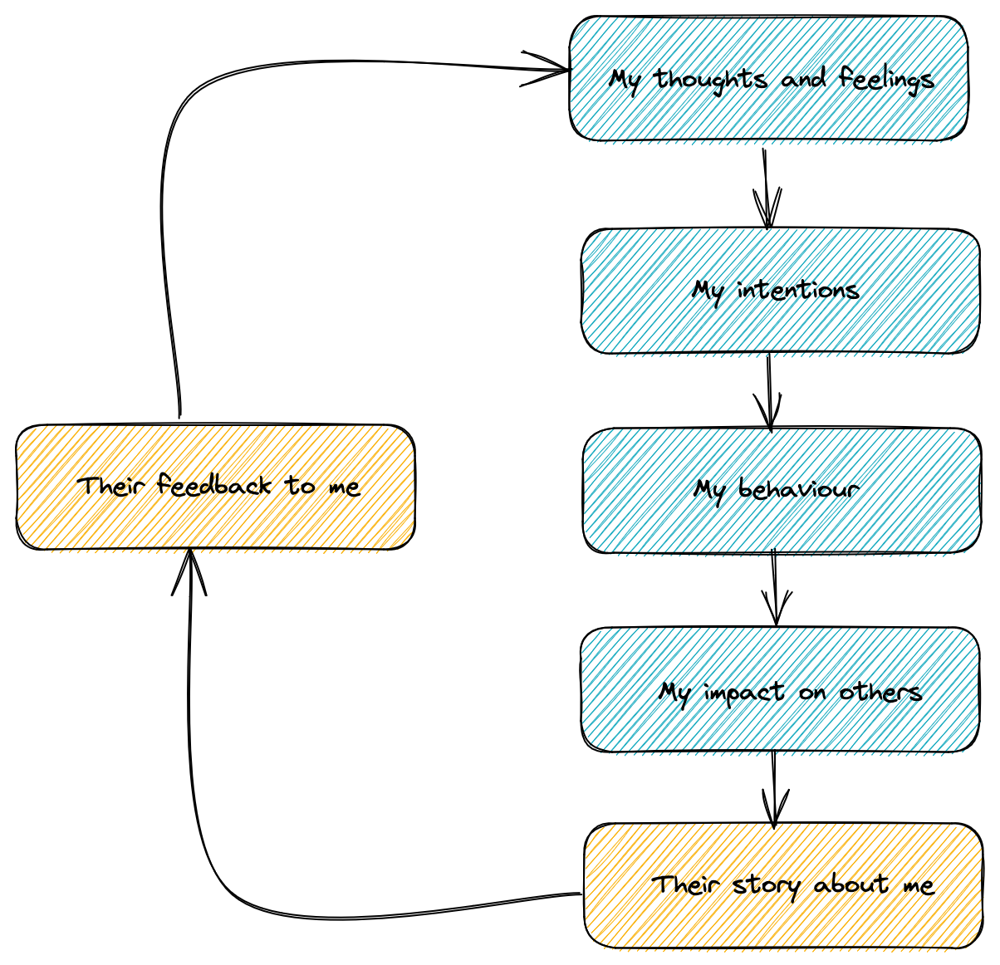
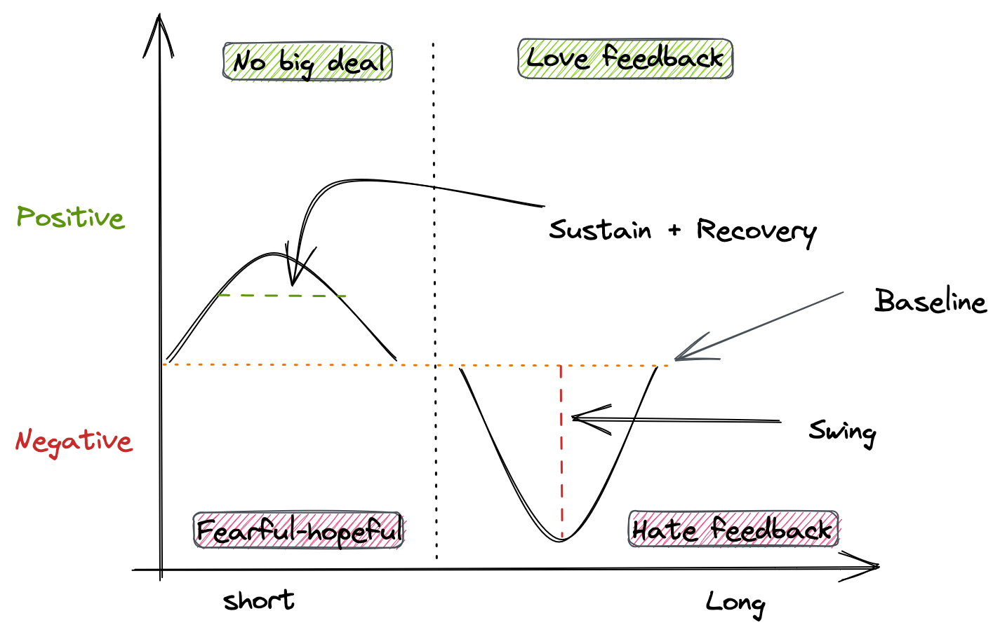
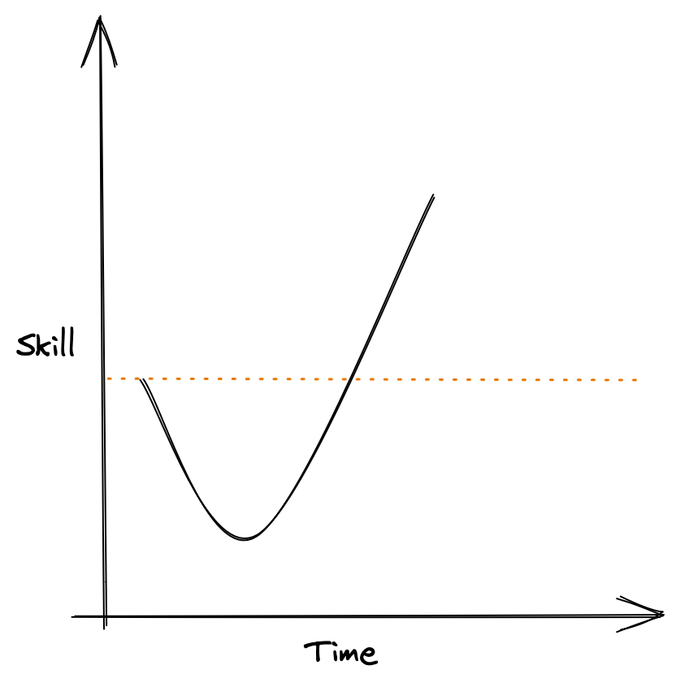

Thanks for the Feedback - Douglas Stone & Sheila Heen
Ideas from the book Thanks for the Feedback
- Our need for acceptance and our need to improve are both affected by feedback. Often these are competing needs.
- Actively seeking out feedback in a work environment can lead to significant positive gains if handled properly.
- Our inherent triggers are barriers to us hearing feedback, accepting it and learning from it.
- Try to ensure that you understand feedback before accepting or rejecting it.
Types of Feedback
| Type of Feedback | Giver’s Purpose |
|---|---|
| Appreciation | Thank, motivate and connect |
| Coaching | Improve capabilities and identify blind spots |
| Evaluation | Rating or decision making |
- Ensure you know which type of feedback is being given.
- Explicitly ask for the type that you are after to avoid confusion.
- If you’re giving feedback check with the receiver that the feedback is being received in the type requested.
- Clarify what the feedback means without jumping into conclusions See Additional Prompts
- Feedback is subjective to the person giving it. It’s shaped by their experiences and temperament. Ask for examples. Find out what “good” looks like in the future.
- All feedback is Data + Judgement call (based on their experience of the world) -> Label -> Future consequences (as they see it)
How Others see your Actions
The Gap Map

- We focus on our intentions in a situation. Others focus on the effect our actions have on them in the same situation.
- We blame the situation for our failure. Others blame our character for the failure.
- We downplay our emotions in a situation while others experience them in an amplified way.
Blind Spots
- You can get honest feedback from someone that dislikes you or with someone you don’t get along with.
- Ask the people you have the hardest time with to give you feedback.
- Discuss separate topics separately. Identify the different streams and call them out. Focus on one stream at a time.
- Each of us only sees one side of the problem.
- Each of us is involved in the problem to different degrees.
- Notice if you are reacting to the other person.
- The three issues of a relationship system:
- Differences - Are the difference between us causing problems?
- Roles - Is this a result of the roles we play?
- Processes - Are processes, politics, physical environment etc making the problem worse?
when it comes to stories about yourself, you get what you Google
- Look for the good or look for the bad. You’ll always find something to answer you query.
Feedback
- How you perceive feedback is based on three things:
- Baseline - how happy or sad are we generally
- Swing - How far off the base line are you pushed by positive or negative events
- Sustain and Recovery - How long are you pushed away from your baseline due to a positive or negative event?
Feedback Quadrant
| Long Sustain of Positive | Short Sustain of Positive | |
|---|---|---|
| Quick Recovery from Negative | Low risk, high reward. “I love feedback” | Low risk, low reward. “No big deal either way” |
| Slow Recovery from Negative | High risk, high reward. “I’m hopeful but fearful” | High risk, low reward. “I hate feedback” |

- We can extend the positive feelings we get from positive feedback by recalling it regularly from memory.
- Feelings exaggerate feedback.
- Figure out how you typically react to feedback (do you get defensive or appreciative?)
- Check in with yourself during a feedback session to see how you are doing.
- Notice how you embellish the story.
- Things to keep in mind:
- Time - The present doesn’t change the past and may determine the future.
- Specificity - Being bad at one thing does not make you bad at everything. Just because you’re bad at something now, doesn’t mean you’ll always be bad at it.
- People - Just because one person doesn’t like us doesn’t mean that everyone doesn’t like us. People’s views change over time.
- Our predictions of the future are often wrong.
- Imagine the feedback is not about you but of someone else. What advice would you give that person on how to respond?
- Ask: “How significant this feedback would be X years from now?”
Tragedy + Time = Comedy
- See your life as an amusing play. Don’t take everything so seriously.
- You can’t control what other people think of you.
Second Score
The first score is the feedback itself. The second is the score you give yourself for handling the feedback, and your subsequent improvements (if any).
Setting Boundaries
- Set limits on feedback. You can dictate the time, frequency or say no to the way it’s delivered.
Unhelpful feedback is useless: relentless unhelpful feedback is destructive
- If the person doesn’t care about the effect of feedback on you or is not listening, then there is something wrong with the dynamic.
- Let the person giving you feedback know the kind of feedback you do want.
- Use
Andinstead ofBut.Andsignifies that two things are true not just one.
I have been afraid to talk to you about this and it’s important to me to be honest with you
- The J curve: A J curve is any of a variety of J-shaped diagrams where a curve initially falls, then steeply rises above the starting point.
Things might get worse before they get better.

- Try on different feedback for a while (eg. A couple of weeks). If it’s not working discard it.
- Make it easy for people to give you feedback. Don’t demand that it be delivered in a specific way.
- Feedback should be specific doing your current job more effectively.
- Have a balanced view.
Ask:
What’s wrong with this feedback?
Then ask:
What’s right about this feedback?
- You don’t always have to accept feedback.
- Encourage people to think about the feedback and their second score.
- Ask people to coach you on how to give better feedback.
Additional Prompts
- Can you give me an example?
- Can you help me understand your feedback?
- What did that mean to you?
- What do you see that’s getting in my own way?
- How did that impact you?
- What’s most upsetting to you and why?
- What could I do to help me improve?
- What am I contributing to the problem between us?
- What does this mean for me?
- What will happen next?
- What is expected of me?
- Given where I am now, what should I do next?
- I wonder if this feedback sits in my blind spot?
- Have I heard this feedback before?
- What will happen if I follow this feedback?
- Is this about helping me grow and improve?
- Is this something about our relationship dynamics?
- What do I feel?
- What’s the story I am telling?
- What’s the actual feedback?
- What is the feedback not about?